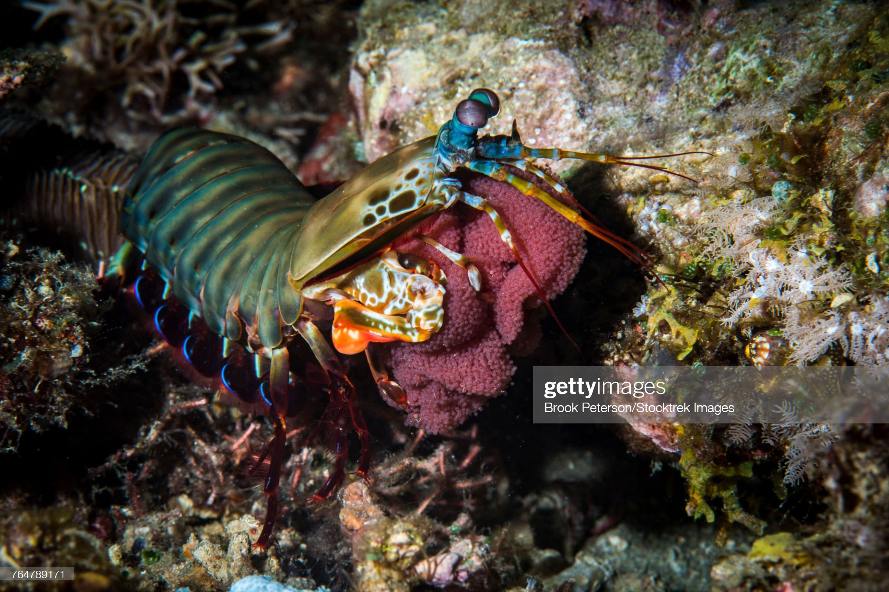
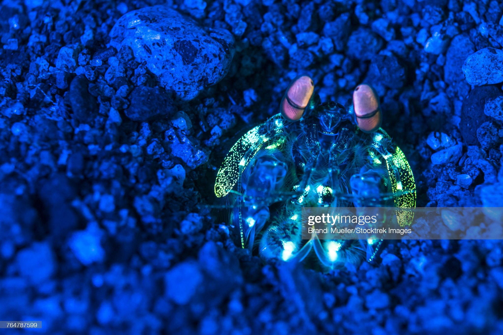

Informações Gerais:
- Reino: Animalia
- Filo: Arthropoda
- Subfilo: Crustacea
- Classe: Malacostraca
- Subclasse: Hoplocarida
- Ordem: Stomatopoda
Os estomatópodes, de nome científico Odontodactylus scyllarus, são crustáceos que caçam com o auxílio de uma visão muito mais apurada que a dos demais seres vivos, capaz de interpretar polarizações desde o espectro infravermelho até o ultravioleta. Apresentam uma grande variação de tamanho, que pode ir de poucos milímetros até aproximadamente 40 cm. São exclusivamente carnívoros e seu segundo par de patas, extremamente desenvolvido, serve tanto para a defesa quanto para o ataque.
Soco Incrível:

Sua anatomia de patas é subdividida em dois grupos funcionais: as perfuradoras e as esmagadoras. As esmagadoras são capazes de desferir um dos socos mais rápidos e violentos do reino animal, podendo apresentar a velocidade de um tiro calibre .22 (equivalente a 720 km/h) e uma pressão de impacto de 600 N/cm²
Olhos Magníficos:
Além do soco potente, sua capacidade de visão é a melhor de todo reino animal. Enquanto nós humandos possuímos apenas 3 cones (os famosos RGB), o sistema de visão dos estomatópodes possui doze cones sensíveis à luz e outros quatro que filtram a luz (16 cones no total), o que lhes permite ver cores polarizadas e imagens multiespectrais